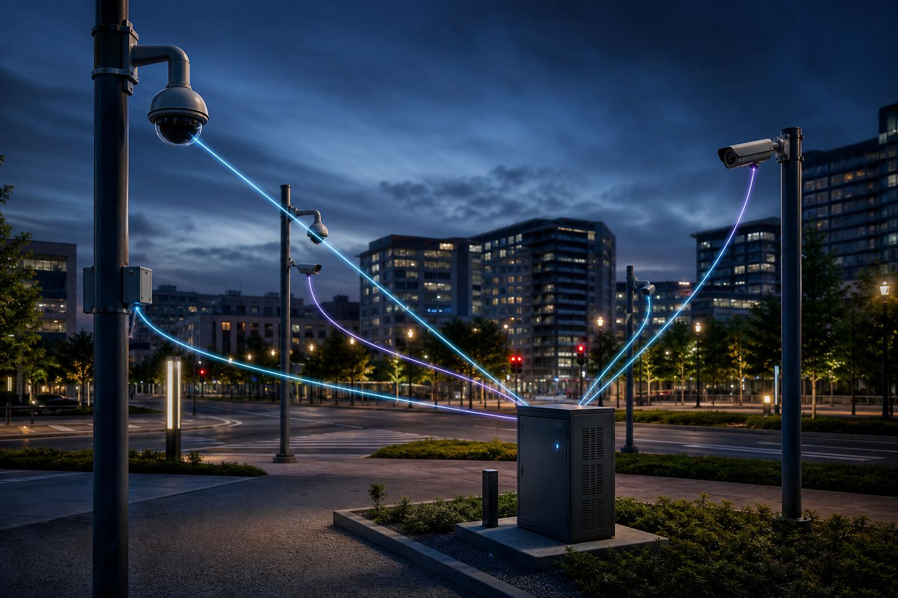

Urban safety / camera networks
Connect every camera securely.
Connect distributed cameras to a central service over authenticated, encrypted tunnels.
AspidIoT / connected systems
We connect cameras, machines, and remote devices with identity and encrypted transport built for the field.
Different devices, same requirement: identify what is trusted, protect every exchange, and keep the operation moving.

Urban safety / camera networks
Connect distributed cameras to a central service over authenticated, encrypted tunnels.
Industrial systems
Keep sensors, gateways, controllers, and operators on the same trusted path.
Robotics and mobile fleets
Protect handoffs between robots, vehicles, and the systems that coordinate them.
Remote infrastructure
Extend identity and encrypted telemetry to energy, water, logistics, and environmental assets.
Across cameras, factories, fleets, and remote assets, the job is simple: know each device, protect data, and adapt access as conditions change.
Give each device and operator a clear, verifiable place in the system.
Keep operational data private from the edge to the service that receives it.
Update access as devices, sites, and responsibilities change.
Start with the system
Share the devices, the environment, and the outcome. We can map the identity and transport work around it.